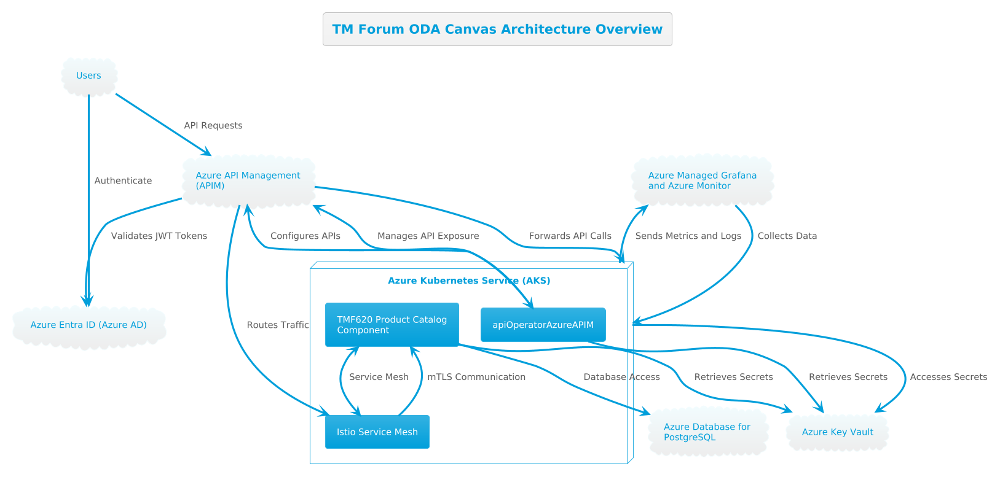

Deployment Guide for TM Forum ODA Canvas on Azure¶
This guide provides detailed steps to deploy the TM Forum Open Digital Architecture (ODA) canvas into an Azure environment. It focuses on deploying the TMF620 Product Catalog component, integrating with Azure Entra ID for authentication, utilizing Istio (deployed as part of the ODA Canvas process) as the service mesh, securing communication with TLS, and ensuring that only Azure API Management (APIM) can access the services in Azure Kubernetes Service (AKS). Additionally, it covers configuring a managed Azure Database for PostgreSQL, including setting up the TMF620 database structures, and using Azure Managed Grafana and Azure Monitor for monitoring.
Prerequisites¶
Before you begin, ensure you have the following:
Azure Subscription: With permissions to create and manage resources.
Azure Kubernetes Service (AKS) Cluster: A running AKS cluster for deploying ODA components.
Azure API Management (APIM) Instance: For managing and securing your APIs.
Azure Key Vault: To securely store secrets accessed by the operator.
Azure Entra ID (Azure AD): For authentication and authorization.
Azure Database for PostgreSQL: Managed PostgreSQL service for database needs.
Ingress Controller: Deployed in your AKS cluster (though Istio’s ingress will be used).
Istio Service Mesh: Deployed as part of the TM Forum ODA Canvas process.
Azure Managed Grafana and Azure Monitor: For monitoring and visualization.
Development Tools: Docker, Kubernetes CLI (kubectl), Helm, Git, and Azure CLI installed on your local machine.
Architecture Overview¶
The architecture includes:
AKS Cluster: Hosting the TMF620 Product Catalog component.
Istio Service Mesh: Managing internal service communication with mutual TLS (mTLS).
Azure API Management (APIM): Exposing and securing the API with policies and integration with Entra ID.
Azure Entra ID: Providing authentication via OAuth2 and JWT tokens.
Azure Database for PostgreSQL: Hosting the TMF620 database structures.
Azure Key Vault: Storing secrets and certificates securely.
apiOperatorAzureAPIM: A Kubernetes operator managing API exposure and APIM configuration.
Azure Managed Grafana and Azure Monitor: For monitoring AKS and application performance.

Step 1: Set Up Azure Key Vault and Store Secrets¶
1.1 Create an Azure Key Vault¶
az keyvault create --name <YourKeyVaultName> --resource-group <YourResourceGroup> --location <YourLocation
1.2 Store Required Secrets¶
Store the following secrets:
apim-service-nameresource-groupsubscription-idaad-tenant-idaad-client-id(for backend app registration)aad-client-id-frontend(for frontend app registration)db-connection-string
# APIM and Azure details
az keyvault secret set --vault-name <YourKeyVaultName> --name apim-service-name --value "<YourAPIMServiceName>"
az keyvault secret set --vault-name <YourKeyVaultName> --name resource-group --value "<YourResourceGroup>"
az keyvault secret set --vault-name <YourKeyVaultName> --name subscription-id --value "<YourSubscriptionID>"
az keyvault secret set --vault-name <YourKeyVaultName> --name aad-tenant-id --value "<YourAADTenantID>"
az keyvault secret set --vault-name <YourKeyVaultName> --name aad-client-id --value "<YourAADClientID>"
az keyvault secret set --vault-name <YourKeyVaultName> --name aad-client-id-frontend --value "<YourAADClientIDFrontend>"
# Database connection string
az keyvault secret set --vault-name <YourKeyVaultName> --name db-connection-string --value "<YourDBConnectionString>"
Step 2: Configure Azure Entra ID with App Registrations¶
We’ll create two app registrations: one for the frontend and one for the backend (API).
2.1 Create Backend App Registration¶
Register a New Application
Go to Azure Entra ID > App registrations > New registration.
Name:
TMF620-ProductCatalog-BackendSupported account types: Choose based on your organization’s needs.
Click Register.
Expose an API
In the Expose an API section, set the Application ID URI (e.g.,
api://<YourAADClientID>).Add a scope:
Scope name:
access_as_userWho can consent: Admins and users
Admin consent display name: Access Product Catalog API
Admin consent description: Allows the app to access the Product Catalog API as the user.
Click Add scope.
Create a Client Secret (if needed)
Under Certificates & secrets, create a new client secret.
Store the secret securely (e.g., in Azure Key Vault if needed).
2.2 Create Frontend App Registration¶
Register a New Application
Name:
TMF620-ProductCatalog-FrontendSupported account types: Same as backend.
Redirect URI: Specify the URI where the frontend application will be hosted.
Configure API Permissions
Under API permissions, click Add a permission.
Select My APIs and choose
TMF620-ProductCatalog-Backend.Select the scope
access_as_user.Click Add permissions.
Grant Admin Consent
Click Grant admin consent for [Your Organization].
Authentication Settings
Under Authentication, configure the following:
Redirect URIs: Add the frontend application’s URI.
Implicit grant and hybrid flows: Enable Access tokens and ID tokens.
2.3 Update apiOperatorAzureAPIM Configuration¶
Ensure the operator is aware of the Entra ID configurations:
The backend app registration (
aad-client-id) is used for validating tokens in APIM policies.The frontend app registration (
aad-client-id-frontend) is used by clients to obtain tokens.
Step 3: Set Up Azure API Management (APIM)¶
3.1 Create or Verify APIM Instance¶
az apim create --name <YourAPIMServiceName> --resource-group <YourResourceGroup> --publisher-email <YourEmail> --publisher-name <YourName>
3.2 Configure Networking for APIM¶
Virtual Network Integration: Ensure APIM is integrated with the same Virtual Network (VNet) as AKS or has network access to the AKS cluster. IP Whitelisting: Note the outbound IP addresses of APIM to configure network policies in AKS.
3.3 Enable Entra ID Integration¶
In the APIM instance, configure Entra ID as an OpenID Connect provider.
Step 4: Set Up Azure Database for PostgreSQL¶
4.1 Create a Managed PostgreSQL Database¶
az postgres flexible-server create --resource-group <YourResourceGroup> --name <YourPostgresServerName> --location <YourLocation> --admin-user <YourAdminUser> --admin-password <YourAdminPassword> --tier Burstable --sku-name Standard_B1ms --version 13
4.2 Configure Networking¶
VNet Integration: Place the PostgreSQL server in the same VNet as your AKS cluster for secure connectivity. Private Endpoint: Use Azure Private Link to create a private endpoint for the PostgreSQL server.
4.3 Create TMF620 Database Structures¶
Connect to the Database
psql "host=<YourPostgresServerName>.postgres.database.azure.com port=5432 dbname=postgres user=<YourAdminUser>@<YourPostgresServerName> sslmode=require"
Create Database and User
CREATE DATABASE tmf620db;
CREATE USER tmf620user WITH PASSWORD '<YourPassword>';
GRANT ALL PRIVILEGES ON DATABASE tmf620db TO tmf620user;
Set Up Database Schema Execute the SQL scripts provided by the TMF620 Product Catalog component to create tables and schemas. Alternatively, run migration scripts if available.
4.4 Update Connection String¶
Format:
postgresql://tmf620user:<YourPassword>@<YourPostgresServerName>.postgres.database.azure.com:5432/tmf620db?sslmode=requireStore this connection string in Azure Key Vault under
db-connection-string.
Step 5: Prepare the AKS Cluster¶
5.1 Verify AKS Cluster Accessibility¶
az aks get-credentials --resource-group <YourResourceGroup> --name <YourAKSClusterName>
kubectl get nodes
5.2 Enable Managed Identity¶
Ensure the AKS cluster has a Managed Identity for accessing Key Vault.
az aks update -n <YourAKSClusterName> -g <YourResourceGroup> --enable-managed-identity
5.3 Grant Access to Key Vault¶
az keyvault set-policy -n <YourKeyVaultName> --object-id <AKS-Managed-Identity-Object-ID> --secret-permissions get list
5.4 Configure Network Policies¶
Enable Network Policy: Ensure your AKS cluster has network policy enabled (Azure or Calico).
az aks create --name <YourAKSClusterName> --resource-group <YourResourceGroup> --network-policy azure
Step 6: Deploy the TM Forum ODA Canvas (Including Istio)¶
6.1 Clone the TM Forum ODA Canvas Repository¶
git clone https://github.com/tmforum-oda/oda-canvas-charts.git
cd oda-canvas-charts
6.2 Deploy ODA Canvas with Istio¶
The ODA Canvas Helm charts include Istio deployment.
helm install oda-canvas ./charts/oda-canvas -n oda --create-namespace
Namespace Labeling: The Helm chart should automatically label namespaces for Istio sidecar injection.
6.3 Verify Istio Deployment¶
kubectl get pods -n istio-system
Ensure that Istio components are running.
Step 7: Configure Azure Managed Grafana and Azure Monitor¶
7.1 Set Up Azure Monitor for Containers¶
Enable Azure Monitor for your AKS cluster.
az monitor log-analytics workspace create --resource-group <YourResourceGroup> --workspace-name <YourWorkspaceName>
az monitor monitor-container health enable --resource-group <YourResourceGroup> --workspace-id <YourWorkspaceID> --cluster-name <YourAKSClusterName>
7.2 Create Azure Managed Grafana Instance¶
az grafana create --name <YourGrafanaInstanceName> --resource-group <YourResourceGroup>
7.3 Configure Data Sources in Azure Managed Grafana¶
In the Azure Portal, navigate to your Grafana instance.
Go to Configuration > Data sources.
Add Azure Monitor as a data source.
Configure with your subscription, resource group, and workspace.
7.4 Import Dashboards¶
Use built-in dashboards or import community dashboards for AKS and Istio monitoring. Configure alerts as needed.
Step 8: Deploy the Operator (apiOperatorAzureAPIM)¶
8.1 Build the Operator Docker Image¶
docker build -t <YourRegistry>/apioperatorazureapim:latest .
8.2 Push the Image to a Container Registry¶
docker push <YourRegistry>/apioperatorazureapim:latest
8.3 Create Kubernetes Resources for the Operator¶
ServiceAccount and RBAC
# apioperatorazureapim-serviceaccount.yaml
apiVersion: v1
kind: ServiceAccount
metadata:
name: apioperatorazureapim-sa
namespace: operators
---
# apioperatorazureapim-role.yaml
kind: Role
apiVersion: rbac.authorization.k8s.io/v1
metadata:
namespace: operators
name: apioperatorazureapim-role
rules:
- apiGroups: ["", "apps", "extensions", "networking.k8s.io", "oda.tmforum.org"]
resources: ["pods", "services", "deployments", "ingresses", "secrets", "configmaps", "exposedapis"]
verbs: ["get", "list", "watch", "create", "update", "patch", "delete"]
---
# apioperatorazureapim-rolebinding.yaml
kind: RoleBinding
apiVersion: rbac.authorization.k8s.io/v1
metadata:
name: apioperatorazureapim-rolebinding
namespace: operators
subjects:
- kind: ServiceAccount
name: apioperatorazureapim-sa
namespace: operators
roleRef:
kind: Role
name: apioperatorazureapim-role
apiGroup: rbac.authorization.k8s.io
Deployment
# apioperatorazureapim-deployment.yaml
apiVersion: apps/v1
kind: Deployment
metadata:
name: apioperatorazureapim
namespace: operators
spec:
replicas: 1
selector:
matchLabels:
app: apioperatorazureapim
template:
metadata:
labels:
app: apioperatorazureapim
spec:
serviceAccountName: apioperatorazureapim-sa
containers:
- name: apioperatorazureapim
image: <YourRegistry>/apioperatorazureapim:latest
env:
- name: KEY_VAULT_NAME
value: "<YourKeyVaultName>"
- name: LOGGING
value: "INFO"
8.4 Apply the Resources¶
kubectl create namespace operators
kubectl apply -f apioperatorazureapim-serviceaccount.yaml
kubectl apply -f apioperatorazureapim-role.yaml
kubectl apply -f apioperatorazureapim-rolebinding.yaml
kubectl apply -f apioperatorazureapim-deployment.yaml
8.5 Verify Operator Status¶
kubectl get pods -n operators
kubectl logs <apioperatorazureapim-pod-name> -n operators
Step 9: Apply the Custom Resource Definition (CRD)¶
# exposedapi-crd.yaml
apiVersion: apiextensions.k8s.io/v1
kind: CustomResourceDefinition
metadata:
name: exposedapis.oda.tmforum.org
spec:
group: oda.tmforum.org
versions:
- name: v1beta3
served: true
storage: true
schema:
openAPIV3Schema:
type: object
properties:
spec:
type: object
properties:
path:
type: string
specification:
type: string
implementation:
type: string
port:
type: integer
rateLimit:
type: object
CORS:
type: object
scope: Namespaced
names:
plural: exposedapis
singular: exposedapi
kind: ExposedAPI
Apply the CRD:
kubectl apply -f exposedapi-crd.yaml
Step 10: Deploy the TMF620 Product Catalog Component¶
10.1 Clone the Repository¶
git clone https://github.com/tmforum-oda/TMF620_Product_Catalog.git
cd TMF620_Product_Catalog
10.2 Build the Docker Image¶
docker build -t <YourRegistry>/tmf620-product-catalog:latest .
10.3 Push the Image to a Container Registry¶
docker push <YourRegistry>/tmf620-product-catalog:latest
10.4 Create Kubernetes Manifests¶
Deployment
# tmf620-product-catalog-deployment.yaml
apiVersion: apps/v1
kind: Deployment
metadata:
name: tmf620-product-catalog
namespace: components
labels:
app: tmf620-product-catalog
spec:
replicas: 2
selector:
matchLabels:
app: tmf620-product-catalog
template:
metadata:
labels:
app: tmf620-product-catalog
spec:
containers:
- name: tmf620-product-catalog
image: <YourRegistry>/tmf620-product-catalog:latest
ports:
- containerPort: 8080
env:
- name: DB_CONNECTION_STRING
valueFrom:
secretKeyRef:
name: db-connection-string
key: connectionString
# Istio sidecar injection is handled by namespace labeling
Service
# tmf620-product-catalog-service.yaml
apiVersion: v1
kind: Service
metadata:
name: tmf620-product-catalog-service
namespace: components
labels:
app: tmf620-product-catalog
spec:
selector:
app: tmf620-product-catalog
ports:
- protocol: TCP
port: 8080
targetPort: 8080
10.5 Apply the Manifests¶
kubectl create namespace components
kubectl label namespace components istio-injection=enabled
kubectl apply -f tmf620-product-catalog-deployment.yaml
kubectl apply -f tmf620-product-catalog-service.yaml
Step 11: Create ExposedAPI Custom Resource for Product Catalog¶
# tmf620-product-catalog-exposedapi.yaml
apiVersion: oda.tmforum.org/v1beta3
kind: ExposedAPI
metadata:
name: tmf620-product-catalog-api
namespace: components
spec:
path: /product-catalog
specification: |
{
"openapi": "3.0.0",
"info": {
"title": "TMF620 Product Catalog API",
"version": "1.0.0"
},
"paths": {
# ... include the full OpenAPI specification here ...
}
}
implementation: "tmf620-product-catalog-service"
port: 8080
rateLimit:
limit: 1000
period: 60
CORS:
allowOrigins:
- "*"
allowMethods:
- GET
- POST
- PUT
- DELETE
allowHeaders:
- Content-Type
- Authorization
exposeHeaders:
- "*"
maxAge: 3600
allowCredentials: true
Apply the ExposedAPI resource:
kubectl apply -f tmf620-product-catalog-exposedapi.yaml
Step 12: Configure AKS RBAC and Network Policies¶
12.1 Restrict Access to Services from APIM¶
Create a Network Policy
# network-policy.yaml
apiVersion: networking.k8s.io/v1
kind: NetworkPolicy
metadata:
name: allow-apim-access
namespace: components
spec:
podSelector:
matchLabels:
app: tmf620-product-catalog
ingress:
- from:
- ipBlock:
cidr: <APIM-Outbound-IP-Address>/32 # Replace with APIM's outbound IP
ports:
- protocol: TCP
port: 8080
policyTypes:
- Ingress
Apply the Network Policy:
kubectl apply -f network-policy.yaml
12.2 Implement RBAC¶
Ensure that only authorized identities can access Kubernetes resources.
Create roles and role bindings as necessary.
Use Azure Entra ID integration with AKS for identity management.
Step 13: Ensure TLS Communication¶
13.1 TLS within Istio Service Mesh¶
mTLS Enabled: Istio is deployed as part of the ODA Canvas process with mTLS enabled by default.
No Additional Configuration Needed: Internal service communication is secured with TLS.
13.2 TLS Termination at Ingress¶
Istio ingress gateway handles TLS termination.
Create a TLS Certificate
Obtain Certificate: Use Azure Key Vault certificates or another trusted CA.
Store Certificate in Kubernetes Secret:
kubectl create -n istio-system secret tls istio-ingressgateway-certs --key <yourdomain.key> --cert <yourdomain.crt>
Configure Gateway and VirtualService
# gateway.yaml
apiVersion: networking.istio.io/v1beta1
kind: Gateway
metadata:
name: product-catalog-gateway
namespace: components
spec:
selector:
istio: ingressgateway
servers:
- port:
number: 443
name: https
protocol: HTTPS
tls:
mode: SIMPLE
credentialName: istio-ingressgateway-certs
hosts:
- "product-catalog.yourdomain.com"
# virtualservice.yaml
apiVersion: networking.istio.io/v1beta1
kind: VirtualService
metadata:
name: product-catalog-virtualservice
namespace: components
spec:
hosts:
- "product-catalog.yourdomain.com"
gateways:
- product-catalog-gateway
http:
- match:
- uri:
prefix: "/product-catalog"
route:
- destination:
host: tmf620-product-catalog-service.components.svc.cluster.local
port:
number: 8080
Apply the Gateway and VirtualService:
kubectl apply -f gateway.yaml
kubectl apply -f virtualservice.yaml
Step 14: Monitor and Verify the Deployment¶
14.1 Check Operator Logs¶
kubectl logs <apioperatorazureapim-pod-name> -n operators
14.2 Verify Istio Resources¶
kubectl get gateway,virtualservice -n components
kubectl get pods -n components
14.3 Check Azure APIM Configuration¶
Log in to the Azure Portal.
Navigate to your APIM instance.
Verify that the
tmf620-product-catalog-apiis listed and configured.
14.4 Use Azure Managed Grafana¶
Access Azure Managed Grafana via the Azure Portal.
View dashboards for AKS cluster monitoring.
Use Azure Monitor data source for metrics and logs.
Step 15: Test the Product Catalog API¶
15.1 Obtain the APIM Gateway URL¶
Find the gateway URL in the APIM instance overview.
15.2 Test API Endpoints via APIM¶
curl -X GET https://<YourAPIMGatewayURL>/product-catalog
15.3 Test Authentication¶
Obtain a JWT Token from Entra ID Use Azure CLI or Postman to authenticate using the frontend app registration.
az login
az account get-access-token --resource api://<YourAADClientID> --query accessToken --output tsv
Use the token in your API requests.
curl -H "Authorization: Bearer <YourJWTToken>" https://<YourAPIMGatewayURL>/product-catalog
15.4 Verify Rate Limiting and CORS¶
Exceed the rate limit to ensure it’s enforced.
Test cross-origin requests from allowed and disallowed origins.
Additional Considerations¶
Security
Secure Database Access: Use Azure Private Link for the PostgreSQL database.
Secrets Management: Use Azure Key Vault and Kubernetes secrets securely.
Network Security: Implement Network Security Groups (NSGs) and Azure Firewall.
Monitoring and Logging
Enhanced Monitoring: Leverage Azure Monitor for logs and metrics.
Logging: Centralize logs using Azure Log Analytics.
Scaling and Performance
Database Scaling: Adjust the SKU of Azure Database for PostgreSQL.
Application Scaling: Configure Horizontal Pod Autoscalers (HPA). -Disaster Recovery and Backup
Database Backups: Ensure automated backups are enabled.
Application Backups: Backup configurations and data. -Compliance and Governance
Compliance Standards: Ensure data handling complies with regulations like GDPR.
Policies and Auditing: Implement Azure Policies and use Entra ID auditing features.
Helpful Resources¶
TM Forum ODA: TM Forum Open Digital Architecture
TMF620 Product Catalog: TMF620 Product Catalog Component
Azure Documentation:
Istio Documentation: Istio Service Mesh